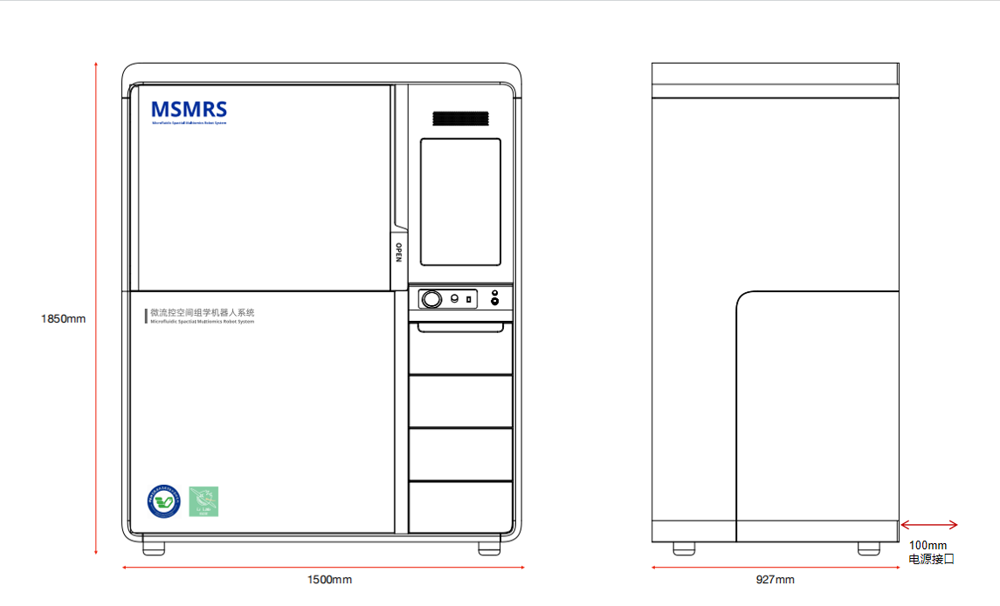

Overview
The MSMRS is short for Microfluidic Spatial Multiomics Robot System, which is a fully automated system designed for processing spatial multi-omics samples. The system integrates a high-precision SCARA robot, assisting clamping mechanism, and vacuum pump to facilitate the complex workflows involved in spatial multi-omics analysis. The MSMRS can perform the most time-consuming pipetting tasks in spatial multi-omics experiments. The system is designed to be user-friendly, with an intuitive interface that allows researchers to easily program and monitor their experiments. By automating the sample processing steps, the MSMRS aims to improve the efficiency and reproducibility of spatial multi-omics studies.

Demo
The following video demonstrates the tutorial of MSMRS's usages.
The following video shows the performance of MSMRS during the testing period.
Contribution & credits
Yang Luo is credited with programming. Mechanical design: Yunxiang Jiang and Yuxi Liu. Industrial design and UI: Yusheng Wu. Testing and maintenance: Xiao Wang and Qianqian Liu.